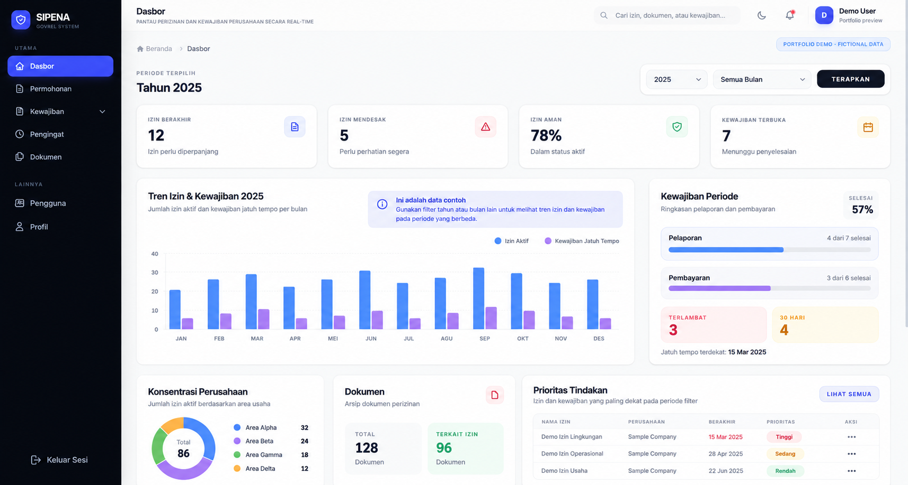

Less juggling.
More getting things done.
Applications that connect the work: operations, approvals, documents, and reporting. Shaped around the way a team actually works.
See selected applications
Private application · Fictional demo data